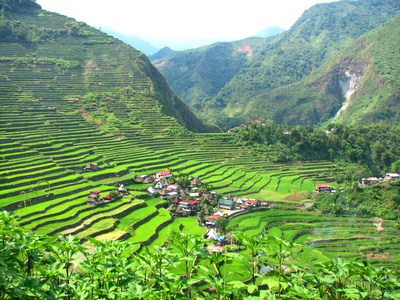
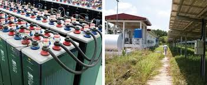
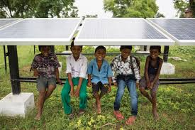

Philippines Microgrids Bring Sustainable Energy to Villages — A HOMER Pro Case Study



HOMER Pro Makes Rural Philippines Microgrids Reliable at Lower Cost
The Challenge
Shell Foundation, Philippines, recently hired consultant Silver Navarro to assist its Dutch consultant with an Access to Energy program promoting Philippines microgrids. The program’s purpose is designing an off-grid power system that the community can sustainably operate and maintain to meet its basic electricity requirement. Navarro’s project was for a community that already possessed several donated diesel gensets, but the cost of fuel made reliable power unaffordable. Delivery delays were an added fuel challenge as the nearby river floods on rainy days. Rainy days do benefit the community’s low-head pico hydro turbine, but water flow is insufficient during summer months.The Solution
“Using HOMER Pro as a design tool for simulation and optimization,” explains Navarro, “the sizes of the power components were selected properly to meet the capacity and energy requirement of the community with the lowest operating and replacement costs.” Navarro’s video goes into more detail about the project.The Future
Navarro believes HOMER Pro is an essential tool for optimizing existing Philippine power systems. These are primarily fossil-based generating systems that can be hybridized with PV and wind, then augmented with an energy storage system to reduce operating costs, he says. He further explains that the Small Power Utilities Group of the Philippines’ National Power Corporation (NPC-SPUG) currently operates 529 of these generating units. Only 44% provide 24-hour electricity, with an average of only 18 hours. The high operating costs are passed on to consumers in their electric bills.